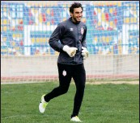

atef dkhili (attack)

ghaith yeferni (attack)
ahmed laabidi (attack)
(attack)
yassine chamakhi (attack)

bassirou compaoré(attack)
bilel khefifi(attack)
adem taous(milieu)
zouheir dhawedi(attack)
wissem ben yahya(milieu)
manoubi haded(attack)
khalil kassab(milieu)
hamza agerbi(deffence)

mokhtar belkhithir(deffence)
ghazi ayedi(milieu)
fakhreddine jeziri(deffence)
skandar laabidi(deffence)

ibrahim mouchili(milieu)
saber khlifa(attack)
ayoub tlili(deffence)
atef dkhili(gardien)
noureddine farhati(gardien)
ayman jaballah(gardien)


waly diouf(deffence)
youssef ayachi(deffence)
chiheb salhi(deffence)
ahmed khalil(milieu)
mahdi ouedherfi(milieu)

rodrigue kossi fiogbé(milieu)
zakarie labidi(milieu)
wajdi sahli(attack)
ayoub ben mcharek(milieu)
sanad khemissi(milieu)
faly ndaw(milie)
mohamed slim ben othman(milieu)

derrick sasraku(attack)
ghazi abderrazzak(deffence)
seddik mejri(deffence)
sabri ammeri(milieu)
jihed trabelsi(milieu)